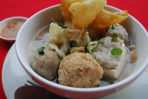
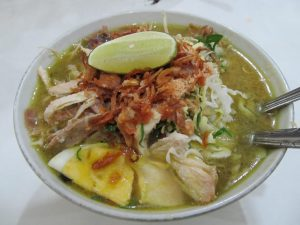
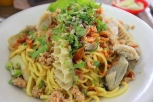
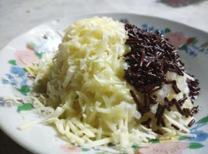
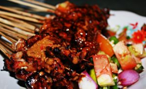
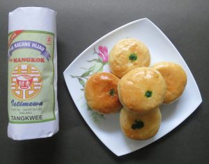

1. Bakso President
Bagi pelancong yang kerap mengunjungi Malang, Bakso President adalah tempat kuliner Malang yang paling legendaris dan wajib untuk dikunjungi. Di tempat kuliner Malang ini, Anda bisa menikmati aneka olahan bakso khas Malang yang rasanya sudah pasti autentik dan juara. Ada bakso bakar yang diolah dengan bumbu khas, bakso dengan jeroan, dan bakso orisinal yang rasanya akan membuat Anda ketagihan. Kedai Bakso President terletak di Jalan Batanghari No. 5 Malang. Lokasinya berada di pinggir rel kereta, sehingga saat ada kereta lewat, Anda bisa merasakan sensasi bergetar yang cukup kuat. Bakso President buka setiap hari mulai pukul 08.00-21.30. Kalau Anda ingin datang dan menikmati kuliner Malang yang satu ini, disarankan untuk datang lebih pagi terutama pada akhirnya pekan. Kedai ini cukup ramai sehingga kadang Anda harus antre tempat duduk untuk makan bakso yang memiliki kisaran harga Rp10.000-25.000 ini.

2. Soto Geprak Mbah Djo
Buka pada pukul 08.00-18.00, Soto Gebrak Mbah Djo yang terletak di Jalan M.T. Haryono ini menyajikan soto yang sangat nikmat. Perpaduan bumbu yang penuh rempah serta empuknya daging yang digunakan akan membuat siapa saja ketagihan dan ingin datang lagi ke tempat kuliner Malang yang buka sejak tahun 1936 ini. Selain menjual soto daging dan juga ayam yang rasanya enak dan sudah melegenda, kedai ini juga menjual aneka kuliner tradisional. Anda bisa membeli pecel, nasi ayam penyet, nasi gurami, bakso, dan aneka minuman seperti jus dan teh. Harga satu porsi soto di sini berkisar Rp20.000-an lengkap dengan minumannya. Oh ya, kalau Anda penasaran mengapa kedai ini memiliki nama geprak. Dahulu kala, Mbah Djo sering menggeprak meja saat memotong daging sotonya. Kebiasaannya memotong dan membuat empuk daging itulah yang menjadikan kedai ini dinamai soto geprak dan mampu bertahan hingga sekarang.

3. Mie Gajah Mada
Bagi warga Malang, kenikmatan Mie Gajah Mada memang tidak lekang oleh waktu. Meski telah berusia puluhan tahun dan tergerus dengan modernisasi, kedai ini tetap eksis untuk memanjakan para pelanggannya yang juga berasal dari luar kota seperti Surabaya dan Jakarta. Mereka biasanya datang ke sini saat pulang kampung dan bernostalgia dengan menyantap hidangan yang nikmat ini. Mie Gajah Mada terletak di Jalan pasar besar 17A Malang. Lokasinya berada di salah satu pujasera Mal Gajah Mada yang merupakan pusat perbelanjaan paling tua di Malang. Di pujasera ini, Anda bisa menemukan olahan mie nikmat dengan harga yang cukup masuk akal. Setidaknya satu menu komplet harganya tidak sampai Rp20.000. Sebagai salah satu mie legenda di Malang, kedai ini menyajikan mie jamur lengkap dengan bakso daging. Anda bisa menyantap mie kenyal dengan kuah gurih serta jamur yang diolah dengan sangat sempurna. Saat ke Malang, Anda wajib datang ke sini dan menghabiskan satu mangkuk mie.

4. Pos Ketan Legenda
Dibuka pertama kali pada tahun 1967, kedai yang menjual aneka olahan ketan ini cukup laris di kalangan pelancong. Letaknya yang strategis dan cuma beberapa meter dari Alun-alun Batu membuat tempat kuliner Malang ini tidak pernah sepi oleh pengunjung. Bahkan, Anda harus antre cukup lama untuk mendapatkan satu porsi ketan dan mendapatkan tempat duduk yang nyaman. Kedai ini buka pada pukul 10.00 dan tutup pada pukul 02.00 setiap harinya. Agar tidak begitu antre, Anda bisa datang lebih sore atau menjelang dini hari. Biasanya kedai mulai sepi dan Anda bisa dengan leluasa memilih menu andalan sembari menikmati udara Batu yang sangat dingin di malam hari. Pos Ketan Legenda yang sering menjadi tempat nongkrong anak muda ini memiliki cukup banyak olahan ketan. Ada ketan bubuk orisinal, ketan cokelat, hingga ketan dengan durian yang rasanya sangat nikmat. Anda bisa mencoba aneka ketan yang ada dengan harga sekitar Rp10.000-an belum dengan minuman andalannya seperti susu jahe segar dari peternakan sapi di Batu.

5. Sate Landak Bu Ria
Ingin merasakan kuliner yang sedikit ekstrem? Datanglah ke Jalan Raya Bugis No. 47, Pakis, Malang. Di tempat wisata kuliner Malang ini, Anda bisa mendapatkan sate yang tidak biasa. Jika biasanya sate menggunakan daging ayam atau daging kambing, di kedai Bu Ria ini, daging yang digunakan adalah daging landak. Ya, hewan yang memiliki duri itu dibakar dan disajikan dengan bumbu kacang dan kecap. Selain landak yang cukup mengerikan, kedai yang buka pada pukul 09.00 dan tutup pada pukul 21.00 ini juga menyediakan menu biawak. Hewan yang mirip sekali dengan komodo ini ternyata memiliki daging yang nikmat. Beberapa pelanggan mengatakan kalau dagingnya mirip ayam dengan tekstur lebih keras dan kenyal. Sate yang disajikan di Kedai Bu Ria terjamin kenikmatan dan kesehatannya. Anda tidak perlu takut apakah nanti satenya beracun atau tidak. Bu Ria telah mengolah daging dua hewan menakutkan itu menjadi sesuatu yang nikmat dan layak untuk dijadikan sebagai sumber protein alternatif.

6. Pia Mangkok
Malang memiliki Pia Mangkok yang sudah sangat melegenda. Terbuat dengan bahan-bahan terbaik dan dikerjakan secara tradisional, kuliner Malang ini selalu menjadi oleh-oleh wajib yang harus Anda beli ketika mengunjungi Malang. Pia Mangkok memiliki bungkus yang unik. Kue yang telah dipanggang hingga keemasan ini dimasukkan ke dalam bungkus kertas. Bungkus ini akan membuat pia jadi lebih awet dan terlihat unik. Anda bisa memborong aneka jenis pia mulai dari rasa orisinal seperti kacang hijau hingga rasa modifikasi seperti durian, cokelat, hingga keju yang dicari oleh banyak orang. Harga satu bungkus pia cukup murah. Untuk isi 25 hanya dihargai Rp75.000 saja. Selain itu untuk rasa cokelat dan tangkwee juga dibanderol dengan harga relatif sama meski kemasannya lebih kecil. Pia Mangkok memiliki dua toko di Malang, pertama di Jalan Semeru dan yang kedua berada di kawasan Jalan Soekarno Hatta.
